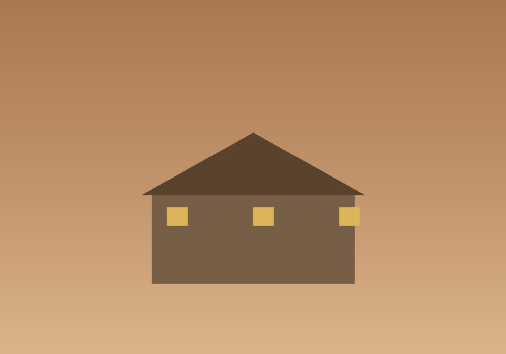

Días 1 · 2 · 3 · 4
El Cairo y sus pirámides
Bienvenida en aeropuerto. Cuatro noches en el Marriott Mena House con vista a las pirámides. Saqqara, museo Egipcio, mercado Khan el-Khalili y cena privada al pie de la Esfinge.


Egipto no es un país que se visite — es uno que se lee. Por eso este itinerario está pensado más como un curso intensivo que como un tour. Tres egiptólogos viajan con nosotros y se van alternando según el sitio: en Giza con un arqueólogo del SCA, en Luxor con una académica de Cambridge, en Abu Simbel con un especialista en cultura nubia.
Combinamos cuatro noches en El Cairo y tres noches a bordo de una dahabiya tradicional navegando del alto Nilo. Cerramos en Asuán y Abu Simbel.

Acceso fuera de horario al recinto de Giza, sin más visitantes.
Tres noches a bordo de un velero del Nilo, doce camarotes, recorrido lento entre templos.
Visita en privado al templo de Ramsés II y vuelo escénico sobre el lago Nasser.

De Giza a la frontera con Sudán siguiendo la línea verde del Nilo. Diez días, tres bases, un solo país que cambió la idea de tiempo.
Empezar por el día 1Bienvenida en aeropuerto. Cuatro noches en el Marriott Mena House con vista a las pirámides. Saqqara, museo Egipcio, mercado Khan el-Khalili y cena privada al pie de la Esfinge.
Vuelo doméstico al alto Nilo. Visita al Valle de los Reyes (incluida la tumba de Tutankamón) y al templo de Hatshepsut.

Embarque en una dahabiya privada de doce camarotes. Tres noches navegando entre Esna, Edfu, Kom Ombo. Cenas en cubierta, baños en pozas tranquilas.

Vuelo al sur, visita privada al templo de Ramsés II al amanecer y tarde en Asuán con paseo en faluca.

Vuelo a El Cairo y conexión internacional.

Sumá días al final del viaje, con salidas privadas.

Cuatro noches en Jordania con visita privada a Petra y desierto en Wadi Rum.

Tres noches en la antigua capital ptolemaica.
Cinco días de snorkel y descanso en la costa egipcia.
| Salida | Disponibilidad | Precio desde | |
|---|---|---|---|
| 11 octubre 2026 | Abierta | $11,200 | Reservar → |
| 8 noviembre 2026 | Pocas plazas | $11,800 | Reservar → |
| 10 enero 2027 | Abierta | $12,400 | Reservar → |
| 21 febrero 2027 | Lista de espera | $12,400 | Reservar → |
| 14 marzo 2027 | Abierta | $11,800 | Reservar → |
Precios por persona en habitación doble. Suplemento de habitación individual a consultar.